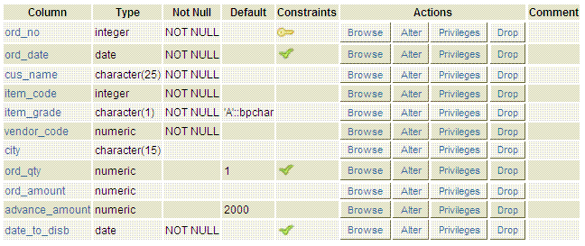
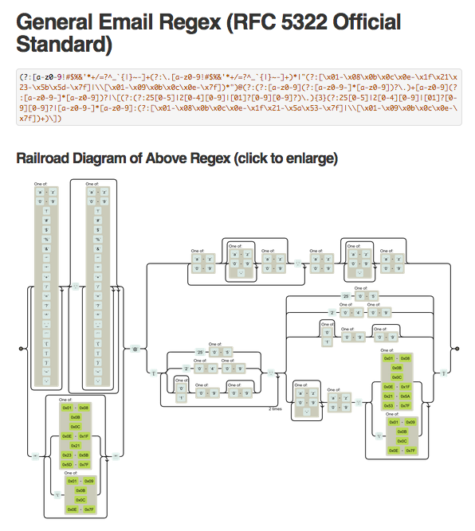
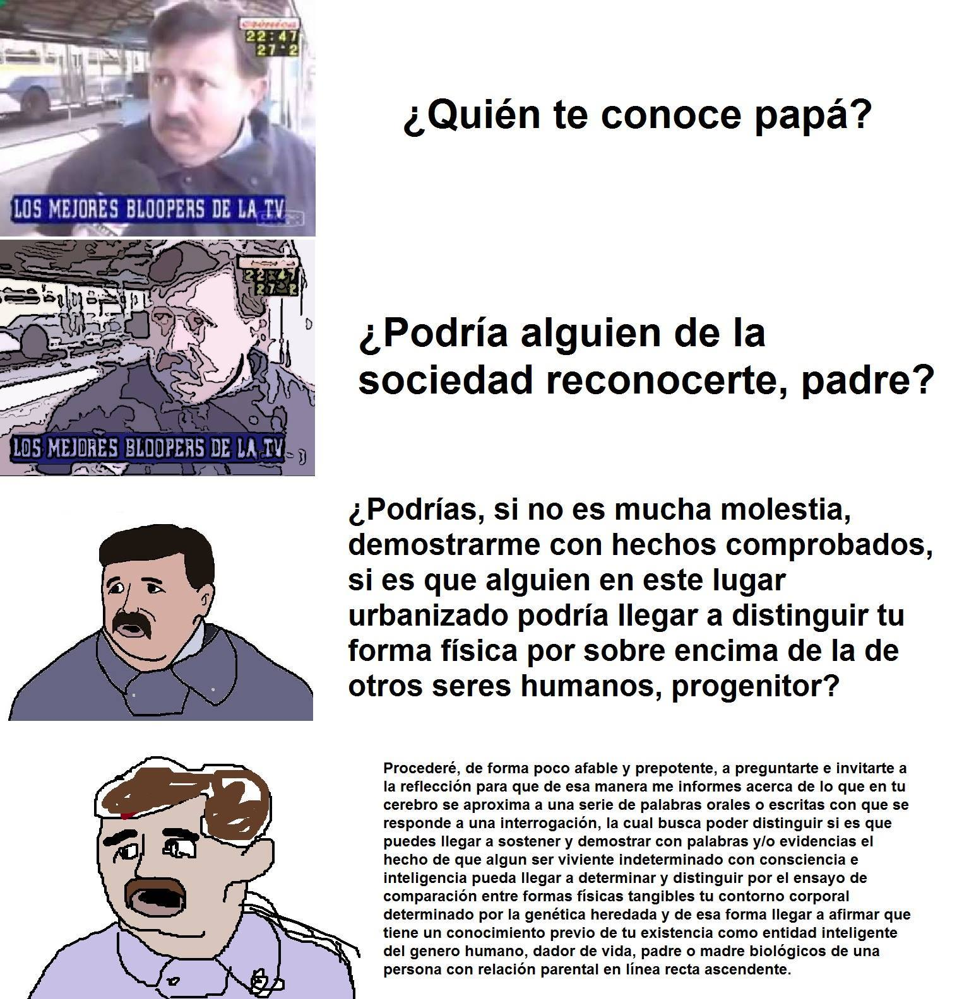
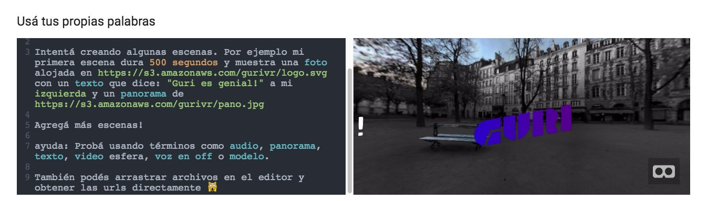
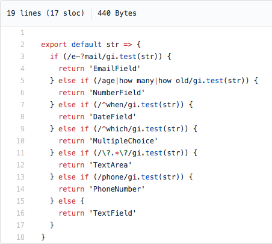

Sobre las cartas la mesa
(Intentando) entender lo que quieren decir nuestros usuarios
Estructura y automatización
Si querés consistencia necesitás un sistema hecho por un solo programador
Cuando trabajamos en sistemas informáticos nos resulta indispensable contar con información estructurada. Esto nos permite organizar, analizar y distribuir información de una forma predecible, haciendo la vida de nos, los programadorxs mucho más felíz, simplificando también el modelo mental del problema que estamos resolviendo y haciendo más eficiente la carga y el guardado de los datos.
Contar con datos estructurados nos permite enfocarnos en la complejidad interna de nuestro sistema, sacandonos de encima
uno de los problemas más manuales y tediosos de nuestro rubro, la limpieza de datos. En otras palabras, estructurar es poblar automatizar.
Si no te convence lo que digo intentá scrappear un sitio de noticias y volvé.
 Estructurar nuestros datos nos ayuda a crear software más eficiente, predecible y robusto.
Que vagancia la de Francia
Las interfaces de usuarios se reducen en un 90% a formularios y listas
Como queremos contar con información estructurada desde el primer momento, solemos someter a nuestros usuarios a utilizar una serie de componentes que cuentan con una cantidad definida de opciones para que se limiten a elegir una y solo una de las que los dioses creadores de este software planificaron para su experiencia.
A veces se nos va la mano con la estructura.
La otra cara de la sobre-estructura de los formularios son las validaciones de input a posteriori. En este caso al pobre usuario lo dejamos escribir lo que quiera en un campo libre, solamente para demostrarle al final que no fue digno de la libertad que le dimos, que cometió un error fatal y que debe volver a rehacer su tarea. De hecho utilizamos el color rojo, haciendo alusión a la bic con la que la maestra ciruela nos mandaba a revisar las burradas.
 Una expresión regular para emails que funciona el 99.99% de las veces.
Con formularios sobreestructurados y con validaciones superfuertes la vida nos sonríe. Ya nunca más tendremos que preocuparnos por los malditos usuarios, sus typos y nombres complicados muejejejejeje (risa malévola).
La pregunta que nos hacemos entonces es, Cómo podemos liberar a nuestros usuarios de la tiranía de la estructura y comernos el garrón nosotros?
Otroletravaladna
Obvñzfhnhxds
Ahora que te convencí de que somos entes malévolos que solo queremos darle trabajo innecesario a los pobres mortales, inundandolos en un mar de burocracía webística, vengo a pararme de la otra vereda. Entender a la gente es difícil.
La mayoría de los métodos de NLP (Procesamiento del lenguaje natural) tradicionales, utilizan la estructura del lenguaje para intepretarlo y pasar de información no estructurada o coloquial a algo que podamos masticar con nuestras mandibulas de silicio. Además, métodos efectivos de NLP suelen requerir conocimientos en Machine Learning y la gran cantidad de corpus solo están preparados para angloparlantes, buuuuuuerns!.
Como si esto fuera poco, en la era del teléfono celular distamos mucho de lo que estos sistemas esperan. Los códigos
que se manejan en el sexting texting son distintos a los que encontramos en la mayoría de los corups etiquetados.
 Vericuetos del lenguaje.
Por suerte para nosotros, hay algunos truquitos que podemos usar para exigirle menos robotización a los usuarios sin perder la oportunidad de ver maratones de series estupidizantes en Netflix.
Doctor reformulemelo
Partido por partido, paso a paso
En esta búsqueda por hacer formularios menos alienantes, esquivandole también a la necesidad de aprender técnicas de programación para gente más inteligente que yo, descubrí que hay un truquito muy interesante (patada baja, piña alta, abajo, abajo, adelante, klapaucius). En general, nuestros formularios estructurados poseen un dominio muy acotado, simplemente identificando palabras clave o patrones simples podemos agarrar la esencia de lo que la persona del otro lado nos quiere transmitir y así nosotros hacer el trabajo de traducir esa información no estructurada en algo que nuestra base de datos puede digerir sin un hepatalgina.
 GuriVR.com te deja (ponele) escribir en lenguaje natural y crear escenas de realidad virtual.
La técnica más simple y efectiva que tenemos a mano es pensar como un usuario y crear pequeñas reglas usando expresiones regulares. Si el texto que recibimos cumple con una regla, tomamos ese input y lo estructuramos. En 2016, trabajando en un proyecto de formularios en periodismo para el Coral Project, hice un experimento para intentar entender el mejor componente de formulario para una pregunta, basado en el título de la pregunta.
Si van al código del experimento van a entender como pude implementar esta mejora mientras conservo mis uñas impecables (?). Ante cada pregunta ingresada por el usuario, chequeo algunos patrones super simples y decido que tipo de widget usar en caso de match.
 60% of the time it works every time.
Heladería "La doble Visera"
Suena como suena, suena como otra canción, y ella se derrite como helado pero de limón
Para ejemplificar vamos a suponer que somos más sortudos como el gato de Alf y nos ponemos una heladería y somos tan copados que vamos a dejarle a la gente escribir lo que le pinte y tratar de entender con que van a deleitarse. Lo primero que vamos a hacer es determinar que términos nos interesan. Por un lado queremos entender cantidades y por otro gustos.
Las cantidades:
- (1/4, 1/2, 1, 2, 3... 10) kilos
- Cucurucho
- Vasito
Los gustos:
- Vainilla
- Americana
- Frutilla
- Limón
- Dulce de leche granizado
- Banana split
Disclaimer: La técnica que vamos a usar a continuación no es la más limpia ni profesional que existe. Lo que queremos mostrar es que poniendo reglas super simples podemos "agarrar" lo que queremos en muchos casos.
Interpretando las medidas:
Para interpretar las medidas vamos a poner un par de reglas muy sencillas usando expresiones regulares. Si leemos 1/4, 1/2 o un dígito cualquiera (menos el 0) y luego un espacio y la palabra kilo, con un "de " en el medio, entonces sabemos que se quiere esa medida de kilos. La expresión regular escrita en JavaScript que lo representa podría ser algo como:
/(un|dos|tres|1\/4|1\/2|[1-9])( de)? ((k|qu)ilo|cucurucho|vasito)s?/gi
De hecho ahí somos tan comprensivos que si algún brutus escribe "quilo" está todo buey.
Para obtener todas las medidas y extraer cuanto de cada una uso el siguiente cachito de código (siempre y cuando "kilosreg" sea la expresión regular):
if (kilosreg.test(txt)) { kilosreg.lastIndex = 0 var results = [] var res = kilosreg.exec(txt) while (res != null) { res[1] = res[1].replace('un', '1') .replace('dos', '2') .replace('tres', '3') results.push(res) res = kilosreg.exec(txt) } // acá results tiene la posta de medidas }
Agarrandole el gustito:
Vamos a limitarnos a los gustos que elegimos. Lo bueno de usar expresiones regulares y un if/else largo en vez de matches especificos con strings es que nos permite agregar casos interesantes como el de (kilo y quilo) sin volvernos locos. Estas funciones corren en microsegundos, no te preocupes en optimizar hasta que sea un problema. En este caso vamos a agarrar los gustos que podamos e incluso agarrar algunos famosos que no tenemos para avisar. Incluso vamos a bancarnos que vengan extranjeros a hacernos los pedidos 🏴 . Todo esto viene incluido en este fantástico y horrorífico if que sería bochado en muchas entrevistas técnicas, demostrando pero amada por los clientes, que es lo que importa.
var results = [] if (/vai?nilla/i.test(txt)) { results.push('vainilla') } if (/(crema )?americana|cream/i.test(txt)) { results.push('americana') } if (/frutilla|strawberry|🍓/i.test(txt)) { results.push('frutilla') } if (/limon|lemon|limón|🍋/i.test(txt)) { results.push('limón') } if (/(dulce de leche|ddl) granizado/i.test(txt)) { results.push('dulce de leche granizado') } if (/banana split|🍌/i.test(txt)) { results.push('banana split') } if (/pera|pear|🍐/i.test(txt)) { results.push('pera') } if (/durazno|peach|🍑/i.test(txt)) { results.push('pera') }
El baño de chocolate:
Vamos a juntar ambas cosas para entender un pedido entero. El truco acá es dividir el texto cada vez que nos hablan de una medida. Cada vez que se menciona una medida, creemos que nos hablan de gustos hasta que pasen a la siguiente medida. Esto lo hacemos guardanonos los índices donde aparecen las medidas en el texto y partiendolo para correr las expresiones regulares de gustos en cada caso:
document.querySelector('#mix').addEventListener('keyup', function(e) { var txt = this.value var orders = getOrders(txt) var out = orders.map((order, i) => { var end = txt.length - 1 if (i < orders.length - 1) { end = orders[i+1].index } var flavors = getFlavors(txt.substring(order.index, end + 1)) return order[3] + ' (' + order[1] + '): ' + flavors.join(', ') }) document.querySelector('#mix-result').textContent = out.join(' • ') })
Papá cuentame otra vez
que importa que importa el blablablá
Disclaimer: Lo siguiente anda (creo) solo en Chrome y amigos.
Para terminar vamos a dar un pasito más y pensar en la prima mala que manda audios de WhatsApp. Ella es claramente nuestra usuaria tipo para la heladería. Vamos a dejarla afuera? Pero claro que no. Por eso vamos a usar la hermosa API de Speech recognition para dejar a la prima dele que blablabla mientras nosotros facturamos.
Para lograr esto simplemente vamos a agregar un botón para que la persona grabe un mensaje de voz. Una vez que obtenemos texto, lo analizamos como haciamos antes con el textarea:
var speaking = false var SpeechRecognition = window.SpeechRecognition var recognition = new SpeechRecognition() recognition.lang = 'es-AR' document.querySelector('#recognition').addEventListener('click', function(){ if (speaking) { speaking = false recognition.stop() return } recognition.onresult = event => { var speechToText = event.results[0][0].transcript var res = document.querySelector('#recognition-result') res.textContent = analyzeOrders(speechToText) } recognition.start() speaking = true })
Esto fue: Como chamuyar que sabemos programar y poner contentos a nuestros usuarios para Nintendo64. Espero que les haya gustado. Chau.